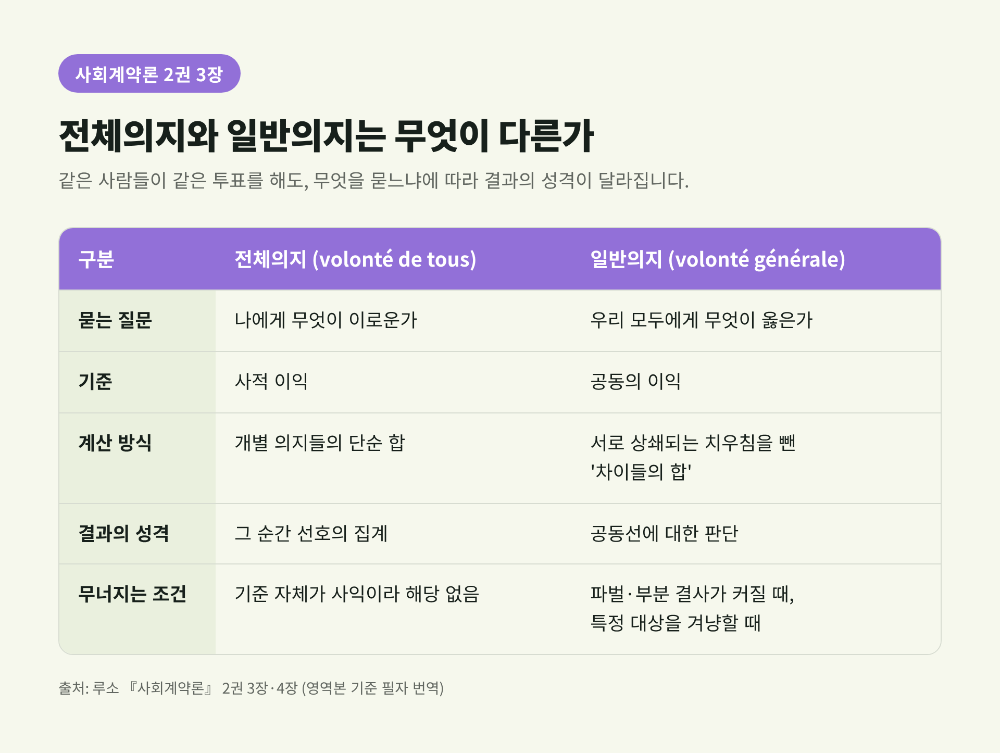
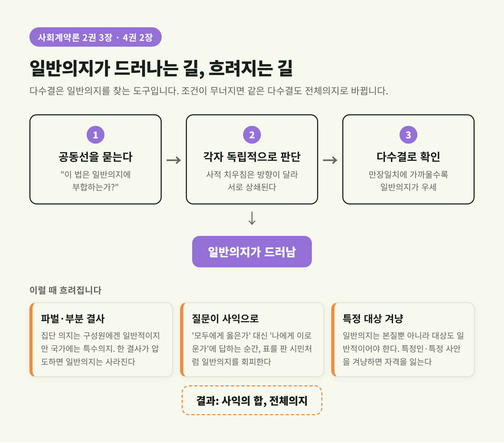
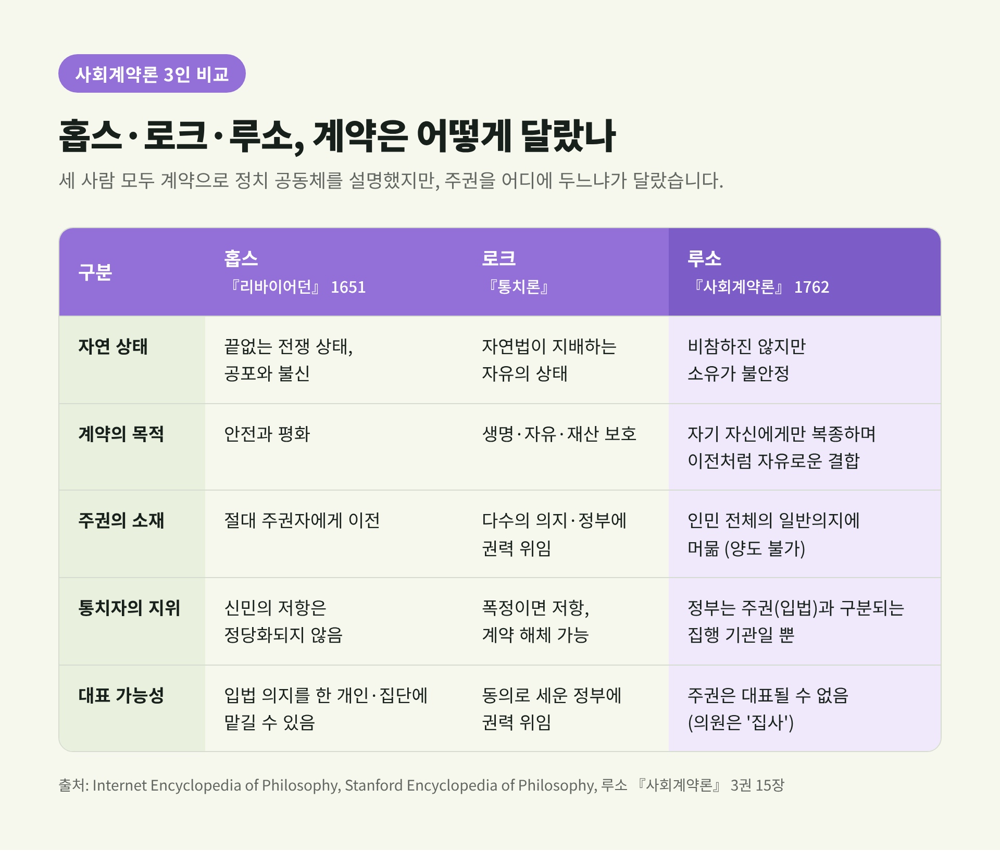
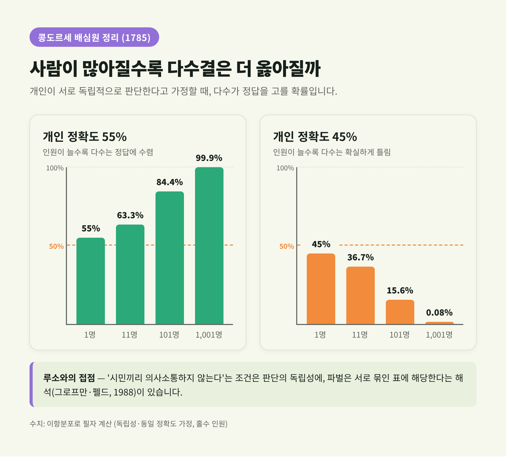
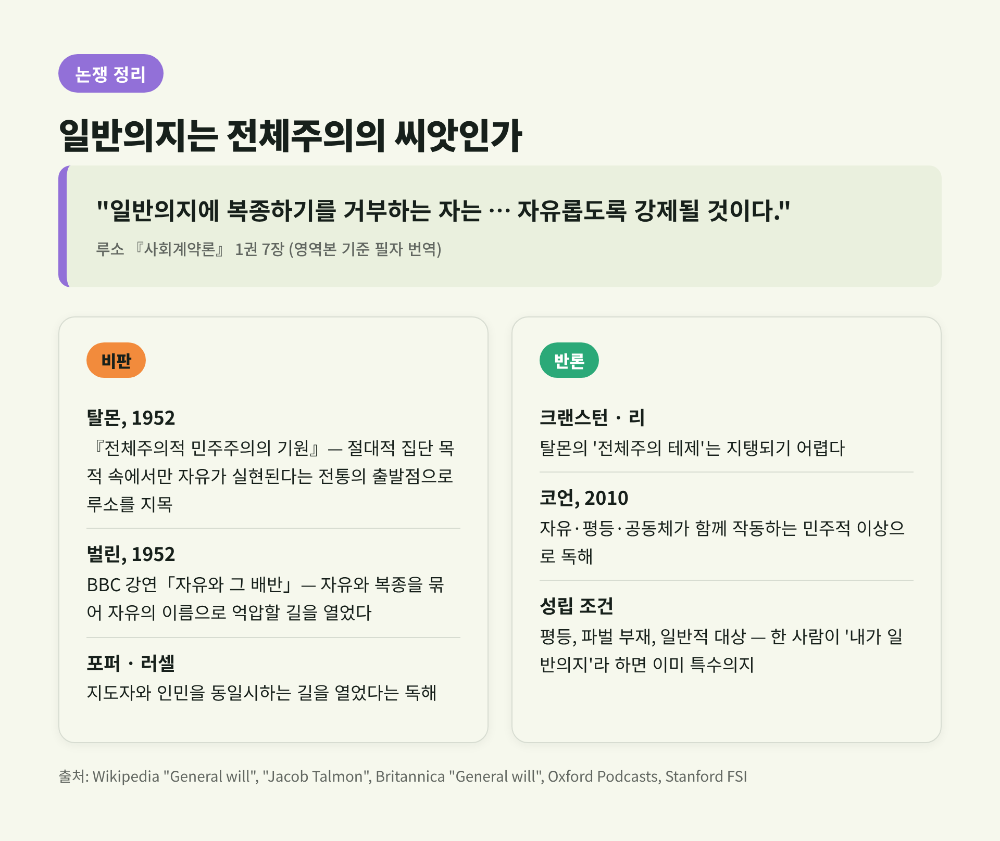
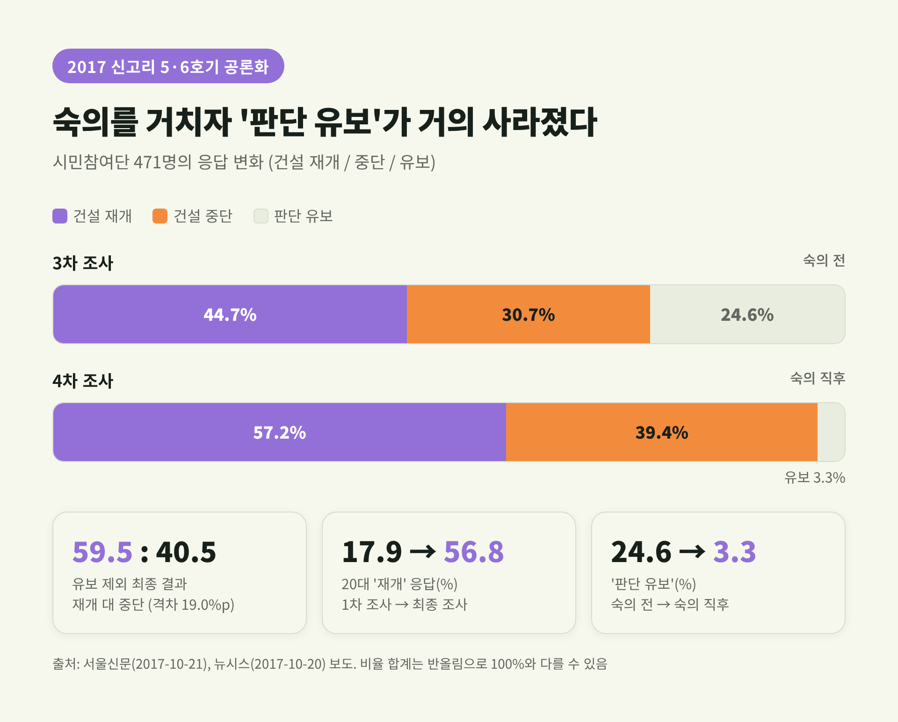

루소 일반의지란 무엇인가 — 다수의 뜻이 곧 모두의 뜻은 아닌 이유
이번 글에서는 루소가 『사회계약론』에서 내세운 '일반의지'를 정리해 보겠습니다. 투표에서 이긴 쪽의 뜻이 곧 공동체의 뜻일까요. 루소는 그렇지 않다고 답했습니다.
먼저 세 줄로 요약하겠습니다.
- 루소의 일반의지는 '모두에게 무엇이 옳은가'를 묻는 의지입니다. 각자의 이익을 더한 전체의지와는 다릅니다.
- 다수결은 일반의지를 찾는 도구일 뿐입니다. 파벌이 생기고 질문이 사익으로 바뀌면 다수의 뜻도 일반의지에서 멀어집니다.
- 이 개념은 민주주의의 이상이라는 평가와 전체주의의 씨앗이라는 비판을 함께 받아 왔습니다. 오늘날 여론조사와 숙의민주주의를 볼 때도 여전히 쓸모 있는 기준입니다.
■ 1762년, 사슬에서 시작한 책
『사회계약론』은 1762년에 나왔습니다. 같은 해 교육론 『에밀』도 출간됐습니다. 정식 제목은 『사회계약론, 또는 정치적 권리의 원리』이고, 모두 네 권으로 짜여 있습니다.
책의 첫 문장은 지금도 자주 인용됩니다.
"인간은 자유롭게 태어났으나, 어디에서나 사슬에 묶여 있다." (1권 1장)
반응은 혹독했습니다. 파리와 제네바 당국은 책을 금지하고 불태우라고 명령했습니다. 저자에게는 체포령이 내려졌습니다. 논란의 중심에는 자유나 주권에 관한 대목보다 4권의 '시민종교(정치종교)' 장이 있었다고 전해집니다.
루소가 풀려던 문제는 1권 6장에 분명히 적혀 있습니다. 공동의 힘으로 각자의 몸과 재산을 지키면서도, 각자가 "오직 자기 자신에게만 복종하고 이전처럼 자유로운" 결합 방식을 찾는 일입니다.
그가 내놓은 답은 이렇습니다. 각자가 자신과 자신의 모든 힘을 "일반의지의 최고 지휘 아래" 공동으로 맡긴다는 것입니다. 그러니 이 책을 이해하는 열쇠는 결국 일반의지라는 한 단어에 있습니다.
■ 일반의지와 전체의지는 무엇이 다른가
'일반의지(volonté générale)'라는 말은 루소가 처음 만든 것이 아닙니다. 원래는 신학 용어였습니다. 말브랑슈는 이 말로 신이 세계를 다스리는 '일반 법칙'을 설명했습니다. 몽테스키외는 1748년 『법의 정신』에서 이 말을 정치의 언어로 썼습니다. 디드로도 1755년 『백과전서』의 「자연법」 항목에서 일반의지를 "모든 사회의 끈"이라고 불렀습니다.
루소는 여기에 날카로운 구분 하나를 보탰습니다. 2권 3장에서 그는 이렇게 씁니다. 전체의지(volonté de tous)는 "사적 이익을 고려하며 개별 의지들의 합에 불과"하다. 반면 일반의지는 "오직 공동의 이익만 고려"한다.
학급에서 체육대회 종목을 정한다고 해 보겠습니다. 학생마다 자기가 잘하는 종목에 표를 던진다면, 그 합계는 전체의지에 가깝습니다. "반 전체가 함께 즐길 수 있는 종목은 무엇인가"를 물으면 일반의지 쪽으로 다가갑니다. 같은 사람들이 같은 투표를 해도, 무엇을 묻느냐에 따라 결과의 성격이 달라지는 셈입니다.

루소는 수학 같은 표현도 덧붙입니다. 각자의 의지에서 "서로 상쇄되는 플러스와 마이너스"를 빼면, "차이들의 합"으로 일반의지가 남는다는 것입니다. 각자의 사적인 치우침은 사람마다 방향이 달라 서로 지워집니다. 남는 것은 모두가 공유하는 이익입니다.
여기에 조건이 하나 붙습니다. 시민들이 "서로 아무런 의사소통도 하지 않는다면" 작은 차이들의 총합은 언제나 일반의지를 낳는다고 그는 말합니다. 문제는 파벌입니다. '부분 결사'가 생기면 그 집단의 의지는 구성원에게는 일반적이지만 국가 전체에는 특수한 의지가 됩니다. 한 결사가 너무 커져 나머지를 압도하면 "더 이상 일반의지는 없다"고까지 씁니다.
그래서 루소의 처방은 단순합니다. 부분 결사를 없애거나, 피할 수 없다면 수를 늘리고 서로 대등하게 만들라는 것입니다.
■ 다수결은 일반의지를 '찾는' 방법이다
그렇다면 일반의지는 어떻게 알 수 있을까요. 루소는 결국 투표를 말합니다. 다만 투표의 의미를 바꿔 놓습니다.
4권 2장에 따르면, 법안이 제출될 때 시민에게 묻는 것은 찬성이냐 반대냐가 아닙니다. 그 법이 "그들의 의지인 일반의지에 부합하는가"입니다. 투표는 선호를 고백하는 일이 아니라 판단을 제출하는 일입니다.
그래서 이런 문장이 나옵니다.
"나와 반대되는 의견이 이긴다면, 그것은 내가 틀렸다는 것을 증명할 뿐이다." (4권 2장)
처음 읽으면 섬뜩한 문장입니다. 하지만 바로 뒤에 단서가 붙습니다. 이 말은 "일반의지의 모든 성질이 여전히 다수 안에 있다"는 것을 전제로 한다는 것입니다. 다수가 사익과 파벌로 움직인다면, 어느 쪽에 서든 자유는 없다고 루소는 덧붙입니다.
일반의지가 한 사안이나 한 사람을 겨냥해서도 안 됩니다. 2권 4장은 일반의지가 진정 그러하려면 "본질에서뿐 아니라 대상에서도 일반적"이어야 한다고 말합니다. 특정인을 처벌하거나 특정 지역에 혜택을 주는 결정은, 아무리 많은 표를 얻어도 일반의지의 이름을 얻기 어렵습니다.
그는 일반의지가 사라지지 않는다고도 봤습니다. 표를 돈에 파는 시민도 자기 안의 일반의지를 없앤 것이 아니라 "회피"할 뿐이라는 것입니다. 질문받은 것과 다른 질문 — '나에게 무엇이 이로운가' — 에 답했다는 뜻입니다.

■ '자유롭도록 강제된다'는 말의 무게
『사회계약론』에서 가장 논쟁적인 구절은 1권 7장에 있습니다.
"일반의지에 복종하기를 거부하는 자는 누구든 몸체 전체에 의해 복종하도록 강제될 것이다. 이는 그가 자유롭도록 강제된다는 뜻일 뿐이다." (1권 7장)
강제와 자유가 한 문장에 묶여 있습니다. 그래서 이 구절은 오랫동안 권위주의의 상징처럼 읽혔습니다. 루소를 옹호하는 사람들도 이 대목에서는 해명을 먼저 내놓습니다.
해석은 크게 몇 갈래로 나뉩니다.
첫째, 인격적 예속에서 벗어나는 자유로 읽는 방식입니다. 루소는 같은 문장에서 이유를 댑니다. 시민이 됨으로써 각자가 "모든 인격적 예속"으로부터 보장받는다는 것입니다. 스탠퍼드 철학 백과(SEP)는 이를 특정인의 자의적 지배를 받지 않는 공화주의적 자유와 연결합니다. 법에 대한 복종은 오히려 남의 변덕에 휘둘리지 않게 해 준다는 논리입니다.
둘째, 스스로 정한 법에 따르는 자유로 읽는 방식입니다. 1권 8장에서 루소는 자연적 자유와 시민적 자유를 나누고, 그 위에 도덕적 자유를 놓습니다. "스스로 정한 법에 대한 복종이 자유"이며, 욕망에만 끌려다니는 것은 노예 상태라는 것입니다. 프레더릭 노이하우저 같은 연구자는 이 구절을 자기가 만드는 데 참여한 법 아래에서 행동하는 자기 결정으로 해석합니다.
셋째, 위험한 온정주의로 읽는 방식입니다. "계몽되었다면 당신도 이것을 원했을 것"이라는 논리는 권력이 시민의 진짜 뜻을 대신 안다고 주장하는 길을 열 수 있습니다. 버트런드 러셀은 이 지점을 들어 루소를 훨씬 어두운 정치의 선조로 지목하기도 했습니다.
Britannica의 일반의지 항목은 이 구절을 두고 학자들의 해석이 갈린다고 담담히 적습니다. 저도 어느 한쪽으로 깔끔하게 정리되는 구절은 아니라고 생각합니다. 다만 문맥을 떼어 낸 인용만으로 판단하기에는 앞뒤 단서가 많은 것은 분명합니다.
■ 홉스·로크와 무엇이 달랐나
사회계약론은 루소만의 발명이 아닙니다. 홉스와 로크가 먼저 이 틀을 세웠습니다. 셋을 나란히 놓으면 일반의지가 왜 독특한지 잘 보입니다.
홉스는 1651년 『리바이어던』에서 자연 상태를 끝없는 전쟁 상태로 그렸습니다. 사람들은 안전을 위해 절대적 주권자에게 권력을 넘깁니다. 신민의 저항은 정당화되지 않습니다.
로크는 『통치론』에서 자연 상태를 자연법이 지배하는 자유의 상태로 봤습니다. 정부의 목적은 생명·자유·재산의 보호입니다. 정부가 폭정으로 흐르면 사람들은 저항할 수 있고 계약은 해체될 수 있습니다.
루소는 두 사람과 다른 지점에 섭니다. 홉스·로크에게는 동의가 있으면 일정한 한계 안에서 거의 모든 정치 체제가 정당해집니다. 루소에게 동의는 필요조건일 뿐입니다. 그 동의가 일반의지를 주권자로 세워야 합니다. 주권은 왕에게도, 다수파에게도 넘어가지 않고 인민 전체의 일반의지에 머뭅니다.

이 차이가 가장 선명한 곳이 대의제에 대한 태도입니다. 3권 15장에서 루소는 주권이 일반의지에 있으므로 "대표될 수 없다"고 단언합니다. 의원은 대표자가 아니라 "집사"일 뿐이라는 것입니다. 그리고 당시 영국을 겨냥해 유명한 말을 남깁니다. 영국 인민은 자유롭다고 생각하지만 "의회 의원을 선출하는 동안만" 자유롭다고요.
물론 그도 현실을 몰랐던 것은 아닙니다. 루소는 법을 만드는 주권과 법을 집행하는 정부를 구분했습니다. 신들의 인민이라면 민주적으로 다스리겠지만 "그토록 완전한 정부는 인간에게 맞지 않는다"고도 썼습니다. 그가 그린 직접 입법은 작은 공화국을 전제로 한 이상에 가깝습니다.
■ 콩도르세의 배심원 정리로 다시 읽기
20세기 후반, 일반의지를 확률 이론으로 다시 읽는 흐름이 생겼습니다. 연결 고리는 프랑스 수학자 콩도르세가 1785년에 발표한 이른바 '배심원 정리'입니다.
정리의 내용은 단순합니다. 정답이 있는 두 선택지를 놓고 다수결을 한다고 합시다. 각자가 서로 독립적으로 판단하고, 정답을 고를 확률이 절반보다 조금이라도 높다면, 사람이 많아질수록 다수가 옳을 확률은 1에 가까워집니다. 반대로 그 확률이 절반보다 낮으면 사람이 많아질수록 다수는 더 확실하게 틀립니다.
숫자로 보면 차이가 극적입니다. 이항분포로 직접 계산해 보면, 한 사람이 맞힐 확률이 55%일 때 101명의 다수가 맞힐 확률은 약 84%, 1,001명이면 약 99.9%가 됩니다. 그런데 개인 정확도가 45%라면 101명의 다수가 맞힐 확률은 약 16%, 1,001명이면 0.1%에도 못 미칩니다. 같은 다수결이 조건에 따라 지혜가 되기도, 집단적 착오가 되기도 하는 것입니다.

정치학자 버나드 그로프만과 스콧 펠드는 1988년 『미국정치학회보(APSR)』 논문에서 이 정리를 루소에 겹쳐 봤습니다. 그들이 정리한 루소 이론의 세 요소는 이렇습니다. 공동선이 존재한다. 시민은 그것을 늘 정확히 판단하지는 못한다. 공동선을 찾으려 투표할 때 인민 집회가 가장 믿을 만한 수단이다. 콩도르세의 모델도 같은 가정에 서 있다는 것이 그들의 주장입니다.
이렇게 보면 루소의 낯선 문장들이 하나씩 풀립니다. '의사소통하지 말라'는 조건은 판단의 독립성에 해당합니다. '찬반이 아니라 일반의지에 부합하는지 묻는다'는 말은 정답이 있는 판단 문제로 투표를 다룬다는 뜻이 됩니다. '반대가 이기면 내가 틀린 것'이라는 문장은 다수 판단의 인식적 우위를 가리킵니다. 파벌이 해로운 이유도 설명됩니다. 서로 묶인 표는 독립적인 판단 여러 개가 아니라 사실상 하나의 판단이 되기 때문입니다.
다만 이 해석에는 반론도 만만치 않습니다. 이듬해 같은 학술지에서 데이비드 에스틀런드와 제러미 월드런이 이론과 해석 양면에서 문제를 제기했고, 그로프만·펠드가 다시 답했습니다. 훗날 이 역사적 독해 자체에 이의를 제기한 연구도 나왔습니다. 에스틀런드는 배심원 정리가 민주주의를 떠받치기에는 "너무 불안정한 기반"이라고 봤습니다. 연대도 짚어 둘 만합니다. 『사회계약론』은 콩도르세의 논문보다 23년 먼저 나왔습니다. 그러니 이것은 루소가 콩도르세를 따랐다는 이야기가 아니라, 콩도르세의 틀로 루소를 다시 읽는 하나의 해석입니다.
■ '전체주의적 민주주의'라는 비판과 반론
일반의지에는 어두운 그림자도 따라다닙니다. 1789년 프랑스 「인간과 시민의 권리선언」 제6조는 "법은 일반의지의 표현이다"라고 적었습니다. 루소의 언어가 혁명의 언어가 된 것입니다. 그리고 혁명이 공포정치로 치달으면서 책임을 묻는 목소리도 커졌습니다.
헤겔은 객관적 이성에 뿌리내리지 못한 일반의지가 공포정치로 이어졌다고 봤습니다. 뱅자맹 콩스탕은 시민을 일반의지에 전적으로 종속시키는 발상을 거부했습니다.
가장 강한 비판은 20세기에 나왔습니다. 이스라엘 역사가 야코브 탈몬은 1952년 『전체주의적 민주주의의 기원』에서 루소를 그 출발점으로 지목했습니다. 자유가 "절대적인 집단 목적의 추구와 달성 속에서만" 실현된다고 믿는 전통이 있고, 그것이 자코뱅을 거쳐 스탈린주의와 닮은 꼴로 이어졌다는 주장입니다. 같은 해 이사야 벌린은 BBC 연속 강연 「자유와 그 배반」에서 루소를 다뤘습니다. 그는 자유와 복종을 하나로 묶은 탓에 자유의 이름으로 억압을 정당화할 길이 열렸다고 비판했습니다. 칼 포퍼도 비슷한 독해에 섰습니다.
반론도 꾸준히 이어졌습니다. 루소 연구자 모리스 크랜스턴과 랠프 리는 탈몬의 '전체주의 테제'가 지탱되기 어렵다고 봤습니다. Britannica는 탈몬의 기소가 오늘날 "대체로 신빙성을 잃었다"고 평가합니다. 정치철학자 조슈아 코언은 2010년 저서에서 일반의지 사회를 자유·평등·공동체가 서로 경쟁하지 않고 함께 작동하는 민주적 이상으로 읽었습니다.
옹호론의 핵심은 일반의지가 서기 위한 조건에 있습니다. 루소는 거친 경제적·문화적 평등, 파벌의 부재, 일반적 대상만 다루는 법을 요구했습니다. 지도자 한 사람이나 한 정당이 "내가 곧 일반의지"라고 말하는 순간, 루소의 기준에서는 이미 특수의지가 된 셈입니다. 그렇다고 비판이 모두 사라지는 것은 아닙니다. 누가 일반의지를 판정하느냐는 물음에 루소의 텍스트가 충분히 답하지 못한다는 지적은 여전히 유효합니다.

■ 오늘의 여론조사와 숙의민주주의에 던지는 질문
예전에는 일반의지가 철학 교과서 속 개념이었습니다. 지금은 여론조사 숫자가 매일 쏟아지는 시대의 실용적인 질문이 됐습니다.
보통의 여론조사는 그 순간 각자의 선호를 찍은 스냅숏입니다. 루소의 언어로 말하면 전체의지에 가깝습니다. 질문이 '나에게 이로운가'에 머물러 있다면, 표본이 아무리 커도 일반의지가 저절로 드러나지는 않습니다.
이 간극을 메우려는 시도가 숙의형 여론조사입니다. 스탠퍼드의 정치학자 제임스 피시킨이 1988년 처음 제안했습니다. 무작위로 뽑은 시민에게 균형 잡힌 자료를 주고, 소그룹 토론과 전문가 질의를 거친 뒤 다시 묻습니다. 그 변화가 '충분히 숙고했다면 대중이 내렸을 결론'을 보여 준다는 발상입니다.
한국에도 생생한 사례가 있습니다. 2017년 신고리 원전 5·6호기 공론화입니다. 숙의 전 조사에서 시민참여단 471명의 응답은 건설 재개 44.7%, 중단 30.7%, 판단 유보 24.6%였습니다. 숙의 직후에는 재개 57.2%, 중단 39.4%로 바뀌었고 유보는 3.3%로 줄었습니다. 유보를 제외한 최종 결과는 재개 59.5%, 중단 40.5%였습니다. 20대의 재개 응답은 1차 조사 17.9%에서 최종 56.8%로 크게 움직였습니다. 권고안에는 건설 재개와 함께 원전을 줄여 가라는 방향도 담겼습니다.

흥미로운 점은 이 지점에서 루소와 숙의민주주의가 갈라진다는 것입니다. 루소는 일반의지를 '정념의 침묵' 속 양심으로 찾으라 했고, 시민 사이의 의사소통을 경계했습니다. 숙의민주주의는 정반대로 토론을 통해 판단을 다듬습니다. 그러나 둘이 공유하는 것도 분명합니다. '나에게 무엇이 이로운가'에서 '우리 모두에게 무엇이 옳은가'로 질문을 바꾸는 일입니다. 저는 루소의 처방보다 이 질문이 오늘날 더 오래 살아남은 유산이라고 생각합니다.
배심원 정리가 주는 경고도 함께 새길 만합니다. 모두가 같은 정보원에 기대고 같은 흐름에 휩쓸리면 판단의 독립성이 무너집니다. 개인의 판단 정확도가 절반에 못 미치는 사안이라면, 다수결은 오히려 착오를 키웁니다. 다수결의 정당성은 숫자에서만 나오지 않습니다. 무엇을 묻는지, 어떤 정보로 판단하는지, 파벌에 묶여 있지 않은지가 함께 따라와야 합니다.
정리하면 이렇습니다.
루소의 일반의지는 다수결의 다른 이름이 아닙니다. 각자의 이익을 더한 전체의지와 달리, 공동체 전체에 무엇이 옳은지를 묻는 의지입니다. 그 생각은 민주주의를 깊게 만들기도 했고, 권력이 남용할 빌미를 주기도 했습니다. 한계가 뚜렷한 개념인 것도 사실입니다.
그래도 이 한 문장은 남겨 둘 만합니다. "투표의 결과보다 먼저, 투표가 무엇을 묻는지 살펴야 한다."
다수의 뜻이 곧 모두의 뜻이냐고 다시 물으신다면, 루소를 읽은 지금은 질문부터 확인해 보자고 답하겠습니다.
참고자료
- 장 자크 루소, 『사회계약론』 영역본(G.D.H. Cole 역 공개본) — 본문 인용은 영역본을 필자가 우리말로 옮김. 1권: https://www.marxists.org/reference/subject/economics/rousseau/social-contract/ch01.htm / 2권: https://www.marxists.org/reference/subject/economics/rousseau/social-contract/ch02.htm / 3권: https://www.marxists.org/reference/subject/economics/rousseau/social-contract/ch03.htm / 4권: https://www.marxists.org/reference/subject/economics/rousseau/social-contract/ch04.htm
- Standard Ebooks, The Social Contract(G.D.H. Cole 역) 2권 3장 — https://standardebooks.org/ebooks/jean-jacques-rousseau/the-social-contract/g-d-h-cole/text/chapter-2-3
- 장 자크 루소, 『사회계약론』, 김영욱 옮김, 후마니타스(국내 번역본 참고) — https://ebook-product.kyobobook.co.kr/dig/epd/ebook/E000008023992
- Stanford Encyclopedia of Philosophy, "Jean Jacques Rousseau" — https://plato.stanford.edu/ENTRIES/rousseau/
- Stanford Encyclopedia of Philosophy, "Jury Theorems" — https://plato.stanford.edu/archives/win2023/entries/jury-theorems/
- Britannica, "General will" — https://www.britannica.com/topic/general-will
- Britannica, "Jean-Jacques Rousseau: Years of seclusion and exile" — https://www.britannica.com/biography/Jean-Jacques-Rousseau/Years-of-seclusion-and-exile
- EBSCO Research Starters, "Rousseau Publishes The Social Contract" — https://www.ebsco.com/research-starters/history/rousseau-publishes-social-contract
- Wikipedia, "General will" — https://en.wikipedia.org/wiki/General_will
- Wikipédia, "Du contrat social" — https://fr.wikipedia.org/wiki/Du_contrat_social
- Internet Encyclopedia of Philosophy, "Social Contract Theory" — https://iep.utm.edu/soc-cont/
- Oklahoma State University Open Textbook, "Rousseau's Social Contract Theory" — https://open.library.okstate.edu/introphilosophy/chapter/rousseaus_social_contract-theory/
- Patrick Riley, "The General Will Before Rousseau" — https://thegreatthinkers.org/rousseau/commentary/essay-the-general-will-before-rousseau-by-patrick-riley/
- Grofman & Feld (1988), "Rousseau's General Will: A Condorcetian Perspective", APSR 82(2) — https://ideas.repec.org/a/cup/apsrev/v82y1988i02p567-576_08.html
- Estlund, Waldron, Grofman & Feld (1989), "Democratic Theory and the Public Interest: Condorcet and Rousseau Revisited", APSR 83(4) — https://cambridge.org/core/journals/american-political-science-review/article/democratic-theory-and-the-public-interest-condorcet-and-rousseau-revisited/A790FABD7F96619472B8AAD7C182269D
- Wikipedia, "Condorcet's jury theorem" — https://en.wikipedia.org/wiki/Condorcet%27s_jury_theorem
- Wikipedia, "Jacob Talmon" — https://en.wikipedia.org/wiki/Jacob_Talmon
- University of Oxford Podcasts, "Freedom and its Betrayal 2: Jean-Jacques Rousseau (1952)" — https://www.podcasts.ox.ac.uk/freedom-and-its-betrayal-2-jean-jacques-rousseau-1952
- Epoché Magazine, "Forced to be Free: Rethinking the Terms of Rousseau's Social Contract" — https://epochemagazine.org/25/forced-to-be-free-rethinking-the-terms-of-rousseaus-social-contract
- Stanford FSI, Joshua Cohen, "Rousseau: A Free Community of Equals" — https://fsi.stanford.edu/node/26070
- Wikipedia, "Deliberative opinion poll" — https://en.wikipedia.org/wiki/Deliberative_poll
- 서울신문, "20~30대 숙의과정 거치며 '재개' 늘어…안전 강화도 요구" (2017-10-21) — https://seoul.co.kr/news/society/2017/10/21/20171021003010
- 뉴시스, 신고리 5·6호기 공론화 결과 보도 (2017-10-20) — https://www.newsis.com/view/NISX20171020_0000123892
- 한국경제 생글생글, 임재관의 인문 논술 강의노트 — https://sgsg.hankyung.com/article/2026042440241